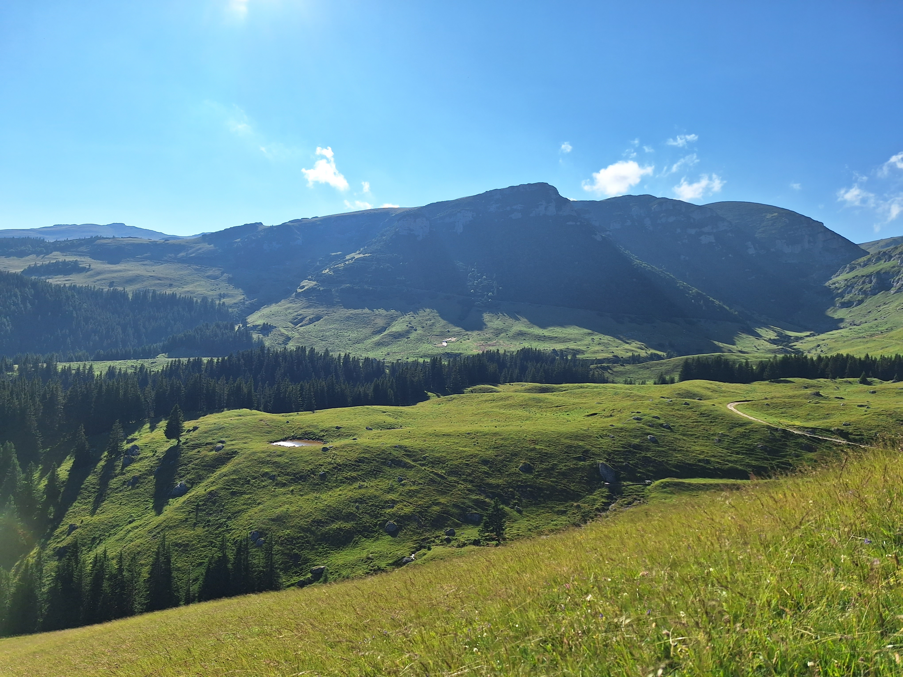

Hello
Publisher: Elad Shayo
Ferrets
Ferrets known as European polecats,
are small carnivorous mammals that belong to the weasel family.
They have a long, slender body, short legs, and a pointed nose.
Ferrets are known for their playful and curious nature.
They are often kept as pets and require a diet of meat-based proteins.
Ferrets are also used for hunting rabbits in some countries due to
their ability to chase rabbits out of their burrows.